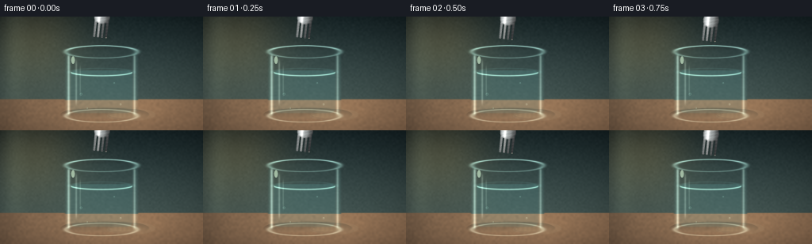
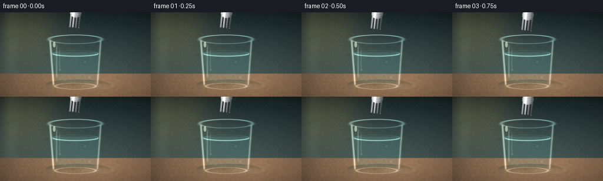
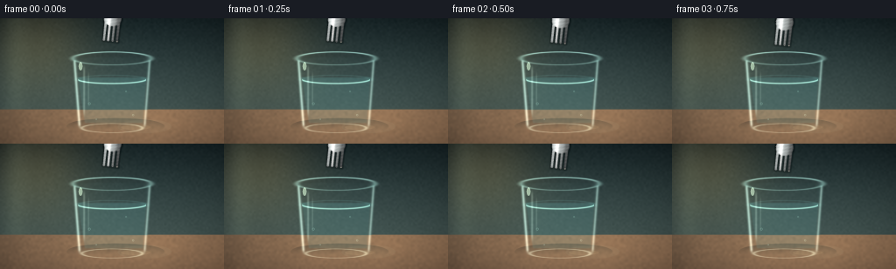
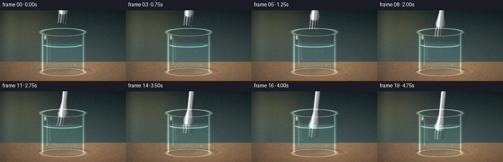
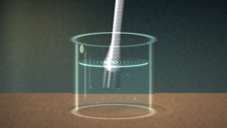
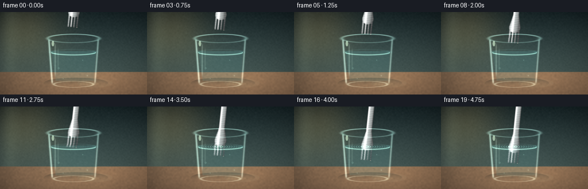
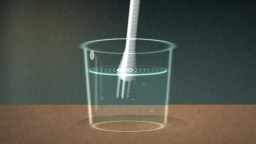
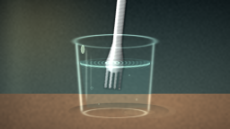
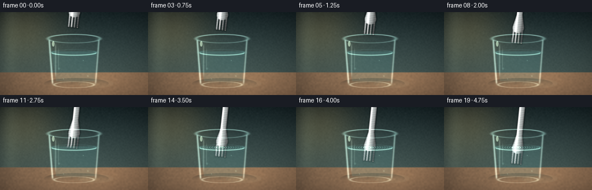

CODING AGENTS AS PIXEL WORLD MODELS
traex/DeepSeek-V4.1-Flash · phygen_074
点击播放 · 原生 RGB 像素
逐轮保存的候选
回放视频、检查图与代码变化。
每份候选均可单独播放。实际图片检查记录在下方工具轨迹中。
候选 01播放与检查图
点击播放 · 原生 RGB 像素


展开代码变化
--- 上一保存版本
+++ 本次保存版本
@@ -0,0 +1,364 @@
+from __future__ import annotations
+
+import math
+from pathlib import Path
+
+import cv2
+import numpy as np
+from PIL import Image, ImageDraw
+
+import artifact_io
+
+
+ROOT = Path(__file__).resolve().parent
+SPEC_W, SPEC_H = 256, 144
+SUPERSAMPLE = 4
+W, H = SPEC_W * SUPERSAMPLE, SPEC_H * SUPERSAMPLE
+FRAMES = 20
+FPS = 4.0
+RNG = np.random.default_rng(7409)
+
+
+def smoothstep(edge0: float, edge1: float, x: np.ndarray) -> np.ndarray:
+ t = np.clip((x - edge0) / (edge1 - edge0), 0.0, 1.0)
+ return t * t * (3.0 - 2.0 * t)
+
+
+def ease_in_out(t: float) -> float:
+ return t * t * (3.0 - 2.0 * t)
+
+
+def soft_ellipse(xx: np.ndarray, yy: np.ndarray, cx: float, cy: float, rx: float, ry: float) -> np.ndarray:
+ q = np.sqrt(((xx - cx) / rx) ** 2 + ((yy - cy) / ry) ** 2)
+ return 1.0 - smoothstep(0.985, 1.015, q)
+
+
+def ring_ellipse(
+ xx: np.ndarray,
+ yy: np.ndarray,
+ cx: float,
+ cy: float,
+ rx: float,
+ ry: float,
+ width: float,
+) -> np.ndarray:
+ q = np.sqrt(((xx - cx) / rx) ** 2 + ((yy - cy) / ry) ** 2)
+ return np.exp(-0.5 * ((q - 1.0) / width) ** 2)
+
+
+def mask_from_draw(draw_fn) -> np.ndarray:
+ image = Image.new("L", (W, H), 0)
+ draw = ImageDraw.Draw(image)
+ draw_fn(draw)
+ return np.asarray(image, dtype=np.float32) / 255.0
+
+
+def colorize(alpha: np.ndarray, color: tuple[float, float, float]) -> np.ndarray:
+ return alpha[..., None] * np.asarray(color, dtype=np.float32)
+
+
+def blend(base: np.ndarray, color: np.ndarray, alpha: np.ndarray) -> np.ndarray:
+ a = np.clip(alpha, 0.0, 1.0)[..., None]
+ return base * (1.0 - a) + color * a
+
+
+def make_background() -> np.ndarray:
+ yy, xx = np.mgrid[0:H, 0:W].astype(np.float32)
+ xn = xx / (W - 1)
+ yn = yy / (H - 1)
+
+ top = np.array([29.0, 43.0, 44.0], dtype=np.float32)
+ low = np.array([89.0, 108.0, 101.0], dtype=np.float32)
+ wall = top[None, None, :] * (1.0 - yn[..., None]) + low[None, None, :] * yn[..., None]
+
+ # Warm window light and a broad cool falloff keep the silver fork readable.
+ warm = np.exp(-(((xn - 0.16) / 0.24) ** 2 + ((yn - 0.18) / 0.42) ** 2))
+ wall += warm[..., None] * np.array([43.0, 32.0, 15.0], dtype=np.float32)
+ vertical_light = np.exp(-((xn - 0.07) / 0.055) ** 2) * (1.0 - 0.25 * yn)
+ wall += vertical_light[..., None] * np.array([15.0, 16.0, 13.0], dtype=np.float32)
+
+ # Subtle wall texture prevents the gradient from looking synthetic.
+ grain = RNG.normal(0.0, 1.0, (H // 8, W // 8)).astype(np.float32)
+ grain = cv2.resize(grain, (W, H), interpolation=cv2.INTER_CUBIC)
+ wall += grain[..., None] * 1.6
+
+ table_y = 104.5 * SUPERSAMPLE
+ table_alpha = smoothstep(table_y - 2.0, table_y + 2.0, yy)
+ table_glow = np.exp(-(((xn - 0.58) / 0.42) ** 2 + ((yn - 0.82) / 0.20) ** 2))
+ table = np.empty_like(wall)
+ table[..., 0] = 130.0 + 30.0 * yn - 18.0 * (1.0 - xn)
+ table[..., 1] = 105.0 + 20.0 * yn - 12.0 * (1.0 - xn)
+ table[..., 2] = 82.0 + 14.0 * yn - 8.0 * (1.0 - xn)
+ table += table_glow[..., None] * np.array([17.0, 12.0, 6.0], dtype=np.float32)
+ grain2 = RNG.normal(0.0, 1.0, (H // 10, W // 10)).astype(np.float32)
+ grain2 = cv2.resize(grain2, (W, H), interpolation=cv2.INTER_CUBIC)
+ table += grain2[..., None] * np.array([3.4, 2.5, 1.8], dtype=np.float32)
+ # Faint long wood grain.
+ wood = np.sin(xx / (12.0 * SUPERSAMPLE) + 1.7 * np.sin(yy / (24.0 * SUPERSAMPLE)))
+ table += (wood * 2.0)[..., None] * np.array([1.0, 0.7, 0.45], dtype=np.float32)
+
+ image = wall * (1.0 - table_alpha[..., None]) + table * table_alpha[..., None]
+
+ # Glass shadow and a soft reflected-light pool on the table.
+ shadow = soft_ellipse(xx, yy, 132 * SUPERSAMPLE, 124 * SUPERSAMPLE, 56 * SUPERSAMPLE, 10 * SUPERSAMPLE)
+ shadow *= (1.0 - smoothstep(113 * SUPERSAMPLE, 130 * SUPERSAMPLE, yy))
+ image = blend(image, np.array([27.0, 35.0, 33.0]), shadow * 0.30)
+ glow = soft_ellipse(xx, yy, 165 * SUPERSAMPLE, 124 * SUPERSAMPLE, 31 * SUPERSAMPLE, 8 * SUPERSAMPLE)
+ image = blend(image, np.array([203.0, 188.0, 150.0]), glow * 0.10)
+
+ # Gentle vignette.
+ vignette = np.clip(1.0 - 0.34 * (((xn - 0.5) / 0.67) ** 2 + ((yn - 0.48) / 0.72) ** 2), 0.58, 1.0)
+ image *= vignette[..., None]
+ return np.clip(image, 0.0, 255.0)
+
+
+def fork_masks(tip_x: float, tip_y: float, angle_deg: float = -6.0) -> tuple[np.ndarray, np.ndarray, np.ndarray]:
+ angle = math.radians(angle_deg)
+ s = SUPERSAMPLE
+ d = np.array([math.sin(angle), math.cos(angle)], dtype=np.float64)
+ n = np.array([math.cos(angle), -math.sin(angle)], dtype=np.float64)
+ tip = np.array([tip_x, tip_y], dtype=np.float64)
+
+ def pt(u: float, v: float) -> tuple[float, float]:
+ p = tip + (v - 105.0) * d + u * n
+ return float(p[0] * s), float(p[1] * s)
+
+ def line(draw: ImageDraw.ImageDraw, v0: float, v1: float, width: float) -> None:
+ draw.line([pt(0.0, v0), pt(0.0, v1)], fill=255, width=max(1, round(width * s)), joint="curve")
+ r = width * s * 0.5
+ for _, v in ((0.0, v0), (0.0, v1)):
+ cx, cy = pt(0.0, v)
+ draw.ellipse((cx - r, cy - r, cx + r, cy + r), fill=255)
+
+ def draw_main(draw: ImageDraw.ImageDraw) -> None:
+ line(draw, 7.0, 57.0, 10.2)
+ # Tapered neck and widened head.
+ draw.polygon([pt(-5.1, 55.0), pt(5.1, 55.0), pt(10.2, 78.0), pt(-10.2, 78.0)], fill=255)
+ draw.ellipse(
+ (pt(-10.2, 75.0)[0], pt(-10.2, 75.0)[1] - 3.0 * s,
+ pt(10.2, 82.0)[0], pt(10.2, 82.0)[1] + 4.0 * s),
+ fill=255,
+ )
+ # Four tapered tines.
+ centers = (-7.5, -2.5, 2.5, 7.5)
+ for center in centers:
+ draw.polygon(
+ [
+ pt(center - 1.55, 78.0),
+ pt(center + 1.55, 78.0),
+ pt(center + 1.15, 104.0),
+ pt(center - 1.15, 104.0),
+ ],
+ fill=255,
+ )
+ draw.ellipse(
+ (pt(center - 1.35, 103.0)[0], pt(center - 1.35, 103.0)[1] - 1.1 * s,
+ pt(center + 1.35, 103.0)[0], pt(center + 1.35, 103.0)[1] + 1.4 * s),
+ fill=255,
+ )
+
+ mask = mask_from_draw(draw_main)
+
+ # An inner mask carries the highlights; erosion supplies a dark bevel.
+ inner = cv2.erode((mask > 0.5).astype(np.uint8), np.ones((2 * SUPERSAMPLE + 1, 2 * SUPERSAMPLE + 1), np.uint8))
+ inner = cv2.GaussianBlur(inner.astype(np.float32), (0, 0), 0.9 * SUPERSAMPLE)
+ return mask, np.clip(inner, 0.0, 1.0), (mask - np.clip(inner, 0.0, 1.0)).clip(0.0, 1.0)
+
+
+def make_fork_layer(tip_x: float, tip_y: float, angle_deg: float = -6.0) -> tuple[np.ndarray, np.ndarray]:
+ yy, xx = np.mgrid[0:H, 0:W].astype(np.float32)
+ mask, inner, bevel = fork_masks(tip_x, tip_y, angle_deg)
+ angle = math.radians(angle_deg)
+ dx = xx / SUPERSAMPLE - tip_x
+ dy = yy / SUPERSAMPLE - tip_y
+ v = 105.0 + dx * math.sin(angle) + dy * math.cos(angle)
+ u = dx * math.cos(angle) - dy * math.sin(angle)
+ q = np.clip(u / 10.5, -1.1, 1.1)
+
+ # Brushed stainless steel with a warm key highlight and cool reflected edge.
+ shade = 0.79 - 0.25 * q
+ shade += 0.34 * np.exp(-((q + 0.37) / 0.20) ** 2)
+ shade -= 0.16 * np.exp(-((q - 0.62) / 0.23) ** 2)
+ brush = 0.030 * np.sin(v * 1.55 + u * 0.42) + 0.018 * np.sin(v * 4.2 - u * 1.1)
+ shade = np.clip(shade + brush, 0.22, 1.35)
+ silver = np.empty((H, W, 3), dtype=np.float32)
+ silver[..., 0] = 201.0 * shade + 17.0 * np.exp(-((q + 0.35) / 0.15) ** 2)
+ silver[..., 1] = 207.0 * shade + 15.0 * np.exp(-((q + 0.35) / 0.15) ** 2)
+ silver[..., 2] = 207.0 * shade + 12.0 * np.exp(-((q + 0.35) / 0.15) ** 2)
+ silver = np.clip(silver, 0.0, 255.0)
+
+ # Dark contour and narrow white specular edge.
+ silver *= 1.0 - 0.48 * bevel[..., None]
+ highlight = np.exp(-((q + 0.40) / 0.075) ** 2) * inner
+ silver += highlight[..., None] * np.array([50.0, 52.0, 49.0], dtype=np.float32)
+
+ # Tiny glints on tine tips.
+ for center in (-7.5, -2.5, 2.5, 7.5):
+ glint = soft_ellipse(
+ xx / SUPERSAMPLE,
+ yy / SUPERSAMPLE,
+ tip_x + center * math.cos(angle) - 2.0 * math.sin(angle),
+ tip_y + center * math.sin(angle) + 2.0 * math.cos(angle),
+ 1.35,
+ 2.3,
+ )
+ silver += glint[..., None] * np.array([75.0, 72.0, 62.0], dtype=np.float32)
+
+ return np.clip(silver, 0.0, 255.0), mask
+
+
+def glass_masks() -> tuple[np.ndarray, np.ndarray]:
+ s = SUPERSAMPLE
+
+ def body_draw(draw: ImageDraw.ImageDraw) -> None:
+ draw.rounded_rectangle((82.0 * s, 42.0 * s, 174.0 * s, 129.0 * s), radius=10.0 * s, fill=255)
+
+ def water_draw(draw: ImageDraw.ImageDraw) -> None:
+ draw.rounded_rectangle((89.0 * s, 68.0 * s, 167.0 * s, 122.0 * s), radius=7.0 * s, fill=255)
+
+ body = mask_from_draw(body_draw)
+ water = mask_from_draw(water_draw)
+ body = cv2.GaussianBlur(body, (0, 0), 0.65 * s)
+ water = cv2.GaussianBlur(water, (0, 0), 0.55 * s)
+ return np.clip(body, 0.0, 1.0), np.clip(water, 0.0, 1.0)
+
+
+def render_frame(index: int, background: np.ndarray, body: np.ndarray, water: np.ndarray) -> np.ndarray:
+ s = SUPERSAMPLE
+ yy, xx = np.mgrid[0:H, 0:W].astype(np.float32)
+ xn = xx / s
+ yn = yy / s
+ time = index / FPS
+ t = index / (FRAMES - 1)
+
+ # The tip reaches the surface around frame 11 and continues downward gently.
+ tip_y = 27.0 + 72.0 * ease_in_out(t)
+ tip_x = 126.0 - 1.0 * ease_in_out(t)
+ fork_color, fork_mask = make_fork_layer(tip_x, tip_y)
+
+ base = background.copy()
+
+ # Fork reflection/shadow is rendered before the glass so refraction carries it too.
+ soft_fork = cv2.GaussianBlur(fork_mask, (0, 0), 2.8 * s)
+ shifted = np.roll(soft_fork, int(2.5 * s), axis=1)
+ shifted = np.roll(shifted, int(1.4 * s), axis=0)
+ base = blend(base, np.array([23.0, 42.0, 42.0], dtype=np.float32), shifted * 0.10)
+ base = base * (1.0 - fork_mask[..., None]) + fork_color * fork_mask[..., None]
+
+ # A physically inspired lens warp. It is strongest near the glass walls and
+ # just below the waterline, where the fork visibly breaks across the surface.
+ body_edge = np.exp(-((np.abs(xn - 128.0) - 43.0) / 3.3) ** 2)
+ water_depth = np.clip((yn - 70.0) / 52.0, 0.0, 1.0)
+ surface_break = np.exp(-((yn - 70.0) / 3.6) ** 2)
+ contact = smoothstep(10.6, 12.5, float(index))
+ ripple_amp = contact * (0.85 + 0.32 * math.sin(time * 5.2))
+ ripple = np.sin((yn - 70.0) * 1.55 - time * 5.0) * ripple_amp * water_depth
+
+ map_x = 128.0 * s + (xx - 128.0 * s) * (0.915 - 0.012 * water_depth)
+ map_x += (4.0 * np.sign(128.0 - xn) * body_edge + 1.8 * surface_break + 0.8 * ripple) * s
+ map_y = yy - (1.7 * water_depth + 1.1 * surface_break) * s
+ warped = cv2.remap(
+ base.astype(np.float32),
+ map_x.astype(np.float32),
+ map_y.astype(np.float32),
+ interpolation=cv2.INTER_LINEAR,
+ borderMode=cv2.BORDER_REFLECT_101,
+ )
+
+ # Clear glass is mostly the refracted scene, with cool edge absorption.
+ body_alpha = body * (0.78 + 0.14 * body_edge)
+ image = base * (1.0 - body_alpha[..., None]) + warped * body_alpha[..., None]
+ image += colorize(body * (0.025 + 0.055 * body_edge), (82.0, 151.0, 146.0))
+
+ # Water gets a separate, stronger optical treatment.
+ water_tint = np.array([97.0, 168.0, 167.0], dtype=np.float32)
+ water_alpha = water * (0.13 + 0.09 * surface_break)
+ image = image * (1.0 - water_alpha[..., None]) + water_tint * water_alpha[..., None]
+ water_light = water * (0.05 + 0.06 * np.exp(-((yn - 75.0) / 18.0) ** 2))
+ image += water_light[..., None] * np.array([14.0, 30.0, 31.0], dtype=np.float32)
+
+ # Side walls, rim, and base give the transparent vessel readable volume.
+ left_wall = np.exp(-((xn - 86.5) / 1.7) ** 2) * smoothstep(47.0, 51.0, yn) * (1.0 - smoothstep(120.0, 127.0, yn))
+ right_wall = np.exp(-((xn - 169.5) / 1.6) ** 2) * smoothstep(47.0, 51.0, yn) * (1.0 - smoothstep(119.0, 127.0, yn))
+ image += (left_wall * 0.42 + right_wall * 0.30)[..., None] * np.array([188.0, 218.0, 207.0], dtype=np.float32)
+
+ outer_rim = ring_ellipse(xn, yn, 128.0, 44.5, 45.2, 7.8, 0.055)
+ lower_rim = ring_ellipse(xn, yn, 128.0, 125.5, 45.2, 8.0, 0.050)
+ upper_half = smoothstep(45.0, 39.0, yn)
+ image += outer_rim[..., None] * (0.34 + 0.40 * upper_half[..., None]) * np.array([151.0, 197.0, 188.0], dtype=np.float32)
+ image += lower_rim[..., None] * 0.30 * np.array([172.0, 205.0, 190.0], dtype=np.float32)
+
+ # Interior window reflection: two soft vertical highlights and a small glint.
+ refl1 = np.exp(-((xn - 96.0) / 1.2) ** 2) * smoothstep(51.0, 61.0, yn) * (1.0 - smoothstep(104.0, 115.0, yn))
+ refl2 = np.exp(-((xn - 101.0) / 0.8) ** 2) * smoothstep(58.0, 68.0, yn) * (1.0 - smoothstep(92.0, 105.0, yn))
+ image += (0.17 * refl1 + 0.10 * refl2)[..., None] * np.array([225.0, 241.0, 226.0], dtype=np.float32)
+ glint = soft_ellipse(xn, yn, 92.0, 55.0, 2.3, 4.8)
+ image += glint[..., None] * np.array([92.0, 103.0, 88.0], dtype=np.float32)
+
+ # Elliptical water surface, dark back edge, bright front meniscus.
+ surface_ring = ring_ellipse(xn, yn, 128.0, 70.0, 39.0, 4.8, 0.075)
+ front_arc = np.exp(-((yn - (70.0 + 4.8 * np.sqrt(np.clip(1.0 - ((xn - 128.0) / 39.0) ** 2, 0.0, 1.0)))) / 0.85) ** 2)
+ front_arc *= (np.abs(xn - 128.0) < 39.0)
+ image += surface_ring[..., None] * np.array([23.0, 45.0, 44.0], dtype=np.float32) * 0.36
+ image += front_arc[..., None] * np.array([126.0, 160.0, 145.0], dtype=np.float32) * 0.72
+
+ # Concentric ripples radiate from the entry point after contact.
+ if contact > 0.01:
+ cx = tip_x
+ cy = 70.0
+ r = np.sqrt((xn - cx) ** 2 + ((yn - cy) / 0.28) ** 2)
+ wave = np.sin(r * 1.55 - time * 6.2 + 0.4)
+ envelope = np.exp(-np.maximum(r - 4.0, 0.0) / 17.0)
+ ripple_glint = wave * envelope * contact * water
+ ripple_glint *= (np.abs(yn - cy) < 7.0)
+ image += np.maximum(ripple_glint, 0.0)[..., None] * np.array([54.0, 72.0, 65.0], dtype=np.float32)
+ image -= np.maximum(-ripple_glint, 0.0)[..., None] * np.array([15.0, 23.0, 23.0], dtype=np.float32)
+
+ # A tight bright disturbance immediately around the fork.
+ local = soft_ellipse(xn, yn, tip_x, 70.0, 8.5, 2.1)
+ image += local[..., None] * np.array([29.0, 37.0, 31.0], dtype=np.float32) * contact
+
+ # Small bubbles and suspended highlights add legible water detail.
+ bubbles = (
+ (102.0, 98.0, 0.8),
+ (152.0, 111.0, 0.65),
+ (144.0, 84.0, 0.55),
+ (110.0, 116.0, 0.5),
+ )
+ for bx, by, size in bubbles:
+ bubble = ring_ellipse(xn, yn, bx, by, size * 1.5, size * 1.5, 0.16) * water
+ image += bubble[..., None] * np.array([41.0, 56.0, 51.0], dtype=np.float32)
+
+ # A narrow caustic pool on the table and a tiny animated shimmer.
+ caustic = soft_ellipse(xn, yn, 155.0, 125.0, 17.0, 3.0)
+ caustic *= 0.60 + 0.40 * np.sin(xn * 0.55 + time * 1.4) ** 2
+ image += caustic[..., None] * np.array([51.0, 45.0, 30.0], dtype=np.float32) * 0.20
+
+ # Final photographic finish: gentle contrast, cool shadow tint, warm highlights.
+ image = (image - 128.0) * 1.045 + 129.0
+ image[..., 2] += np.clip(95.0 - image[..., 0], 0.0, 30.0) * 0.045
+ image[..., 0] += np.clip(image[..., 0] - 160.0, 0.0, 95.0) * 0.025
+ image = np.clip(image, 0.0, 255.0)
+
+ final = cv2.resize(image, (SPEC_W, SPEC_H), interpolation=cv2.INTER_AREA)
+ return np.clip(np.rint(final), 0, 255).astype(np.uint8)
+
+
+def main() -> None:
+ background = make_background()
+ body, water = glass_masks()
+ frames = np.stack([render_frame(i, background, body, water) for i in range(FRAMES)], axis=0)
+
+ artifact_io.save(frames, ROOT)
+
+ # Also provide a directly playable video alongside the benchmark artifacts.
+ video_path = ROOT / "video.mp4"
+ writer = cv2.VideoWriter(str(video_path), cv2.VideoWriter_fourcc(*"mp4v"), FPS, (SPEC_W, SPEC_H))
+ if writer.isOpened():
+ for frame in frames:
+ writer.write(cv2.cvtColor(frame, cv2.COLOR_RGB2BGR))
+ writer.release()
+
+
+if __name__ == "__main__":
+ main()
候选 02播放与检查图
点击播放 · 原生 RGB 像素


展开代码变化
--- 上一保存版本
+++ 本次保存版本
@@ -160,7 +160,10 @@
mask = mask_from_draw(draw_main)
# An inner mask carries the highlights; erosion supplies a dark bevel.
- inner = cv2.erode((mask > 0.5).astype(np.uint8), np.ones((2 * SUPERSAMPLE + 1, 2 * SUPERSAMPLE + 1), np.uint8))
+ inner = cv2.erode(
+ (mask > 0.5).astype(np.uint8),
+ np.ones((1 * SUPERSAMPLE + 1, 1 * SUPERSAMPLE + 1), np.uint8),
+ )
inner = cv2.GaussianBlur(inner.astype(np.float32), (0, 0), 0.9 * SUPERSAMPLE)
return mask, np.clip(inner, 0.0, 1.0), (mask - np.clip(inner, 0.0, 1.0)).clip(0.0, 1.0)
@@ -182,13 +185,13 @@
brush = 0.030 * np.sin(v * 1.55 + u * 0.42) + 0.018 * np.sin(v * 4.2 - u * 1.1)
shade = np.clip(shade + brush, 0.22, 1.35)
silver = np.empty((H, W, 3), dtype=np.float32)
- silver[..., 0] = 201.0 * shade + 17.0 * np.exp(-((q + 0.35) / 0.15) ** 2)
- silver[..., 1] = 207.0 * shade + 15.0 * np.exp(-((q + 0.35) / 0.15) ** 2)
- silver[..., 2] = 207.0 * shade + 12.0 * np.exp(-((q + 0.35) / 0.15) ** 2)
+ silver[..., 0] = 216.0 * shade + 19.0 * np.exp(-((q + 0.35) / 0.15) ** 2)
+ silver[..., 1] = 223.0 * shade + 17.0 * np.exp(-((q + 0.35) / 0.15) ** 2)
+ silver[..., 2] = 222.0 * shade + 14.0 * np.exp(-((q + 0.35) / 0.15) ** 2)
silver = np.clip(silver, 0.0, 255.0)
# Dark contour and narrow white specular edge.
- silver *= 1.0 - 0.48 * bevel[..., None]
+ silver *= 1.0 - 0.62 * bevel[..., None]
highlight = np.exp(-((q + 0.40) / 0.075) ** 2) * inner
silver += highlight[..., None] * np.array([50.0, 52.0, 49.0], dtype=np.float32)
@@ -211,10 +214,28 @@
s = SUPERSAMPLE
def body_draw(draw: ImageDraw.ImageDraw) -> None:
- draw.rounded_rectangle((82.0 * s, 42.0 * s, 174.0 * s, 129.0 * s), radius=10.0 * s, fill=255)
+ draw.polygon(
+ [
+ (83.0 * s, 45.0 * s),
+ (173.0 * s, 45.0 * s),
+ (167.0 * s, 123.0 * s),
+ (162.0 * s, 129.0 * s),
+ (94.0 * s, 129.0 * s),
+ (89.0 * s, 123.0 * s),
+ ],
+ fill=255,
+ )
def water_draw(draw: ImageDraw.ImageDraw) -> None:
- draw.rounded_rectangle((89.0 * s, 68.0 * s, 167.0 * s, 122.0 * s), radius=7.0 * s, fill=255)
+ draw.polygon(
+ [
+ (89.0 * s, 68.0 * s),
+ (167.0 * s, 68.0 * s),
+ (163.0 * s, 120.0 * s),
+ (97.0 * s, 120.0 * s),
+ ],
+ fill=255,
+ )
body = mask_from_draw(body_draw)
water = mask_from_draw(water_draw)
@@ -254,9 +275,9 @@
ripple_amp = contact * (0.85 + 0.32 * math.sin(time * 5.2))
ripple = np.sin((yn - 70.0) * 1.55 - time * 5.0) * ripple_amp * water_depth
- map_x = 128.0 * s + (xx - 128.0 * s) * (0.915 - 0.012 * water_depth)
- map_x += (4.0 * np.sign(128.0 - xn) * body_edge + 1.8 * surface_break + 0.8 * ripple) * s
- map_y = yy - (1.7 * water_depth + 1.1 * surface_break) * s
+ map_x = 128.0 * s + (xx - 128.0 * s) * (0.952 - 0.008 * water_depth)
+ map_x += (2.3 * np.sign(128.0 - xn) * body_edge + 1.1 * surface_break + 0.45 * ripple) * s
+ map_y = yy - (0.8 * water_depth + 0.7 * surface_break) * s
warped = cv2.remap(
base.astype(np.float32),
map_x.astype(np.float32),
@@ -278,12 +299,15 @@
image += water_light[..., None] * np.array([14.0, 30.0, 31.0], dtype=np.float32)
# Side walls, rim, and base give the transparent vessel readable volume.
- left_wall = np.exp(-((xn - 86.5) / 1.7) ** 2) * smoothstep(47.0, 51.0, yn) * (1.0 - smoothstep(120.0, 127.0, yn))
- right_wall = np.exp(-((xn - 169.5) / 1.6) ** 2) * smoothstep(47.0, 51.0, yn) * (1.0 - smoothstep(119.0, 127.0, yn))
- image += (left_wall * 0.42 + right_wall * 0.30)[..., None] * np.array([188.0, 218.0, 207.0], dtype=np.float32)
-
- outer_rim = ring_ellipse(xn, yn, 128.0, 44.5, 45.2, 7.8, 0.055)
- lower_rim = ring_ellipse(xn, yn, 128.0, 125.5, 45.2, 8.0, 0.050)
+ wall_offset = 43.0 - 6.0 * np.clip((yn - 48.0) / 78.0, 0.0, 1.0)
+ left_wall = np.exp(-((xn - (128.0 - wall_offset)) / 1.55) ** 2)
+ left_wall *= smoothstep(47.0, 51.0, yn) * (1.0 - smoothstep(121.0, 127.0, yn))
+ right_wall = np.exp(-((xn - (128.0 + wall_offset)) / 1.45) ** 2)
+ right_wall *= smoothstep(47.0, 51.0, yn) * (1.0 - smoothstep(120.0, 127.0, yn))
+ image += (left_wall * 0.50 + right_wall * 0.36)[..., None] * np.array([191.0, 221.0, 210.0], dtype=np.float32)
+
+ outer_rim = ring_ellipse(xn, yn, 128.0, 46.0, 45.0, 7.4, 0.055)
+ lower_rim = ring_ellipse(xn, yn, 128.0, 126.0, 34.5, 5.2, 0.050)
upper_half = smoothstep(45.0, 39.0, yn)
image += outer_rim[..., None] * (0.34 + 0.40 * upper_half[..., None]) * np.array([151.0, 197.0, 188.0], dtype=np.float32)
image += lower_rim[..., None] * 0.30 * np.array([172.0, 205.0, 190.0], dtype=np.float32)
候选 03播放与检查图
点击播放 · 原生 RGB 像素


展开代码变化
--- 上一保存版本
+++ 本次保存版本
@@ -191,7 +191,7 @@
silver = np.clip(silver, 0.0, 255.0)
# Dark contour and narrow white specular edge.
- silver *= 1.0 - 0.62 * bevel[..., None]
+ silver *= 1.0 - 0.58 * bevel[..., None]
highlight = np.exp(-((q + 0.40) / 0.075) ** 2) * inner
silver += highlight[..., None] * np.array([50.0, 52.0, 49.0], dtype=np.float32)
@@ -287,7 +287,7 @@
)
# Clear glass is mostly the refracted scene, with cool edge absorption.
- body_alpha = body * (0.78 + 0.14 * body_edge)
+ body_alpha = body * (0.69 + 0.13 * body_edge)
image = base * (1.0 - body_alpha[..., None]) + warped * body_alpha[..., None]
image += colorize(body * (0.025 + 0.055 * body_edge), (82.0, 151.0, 146.0))
@@ -318,6 +318,14 @@
image += (0.17 * refl1 + 0.10 * refl2)[..., None] * np.array([225.0, 241.0, 226.0], dtype=np.float32)
glint = soft_ellipse(xn, yn, 92.0, 55.0, 2.3, 4.8)
image += glint[..., None] * np.array([92.0, 103.0, 88.0], dtype=np.float32)
+
+ # Reassert a fine dark silhouette and selective specular core after refraction.
+ fork_edge = cv2.dilate(fork_mask, np.ones((3 * s, 3 * s), np.uint8)) - fork_mask
+ fork_edge = cv2.GaussianBlur(fork_edge, (0, 0), 0.45 * s)
+ image -= fork_edge[..., None] * np.array([35.0, 42.0, 40.0], dtype=np.float32) * 0.36
+ fork_core = fork_mask * np.exp(-((xn - tip_x - 2.8) / 2.0) ** 2)
+ fork_core *= smoothstep(25.0, 38.0, yn)
+ image += fork_core[..., None] * np.array([22.0, 23.0, 20.0], dtype=np.float32)
# Elliptical water surface, dark back edge, bright front meniscus.
surface_ring = ring_ellipse(xn, yn, 128.0, 70.0, 39.0, 4.8, 0.075)
可观测工具轨迹
实际执行的命令与返回图片。
命令 1exit 0
/bin/bash -c "pwd && rg --files -g '"'!*node_modules*'"' -g '"'!*.mp4'"' -g '"'!*.mov'"' | sed -n '1,200p'"
命令 2exit 0
/bin/bash -c "sed -n '1,240p' prompt.txt"
命令 3exit 0
/bin/bash -c "sed -n '1,260p' GENERATION_RULES.md"
命令 4exit 0
/bin/bash -c 'cat task_spec.json'
命令 5exit 0
/bin/bash -c "sed -n '1,260p' artifact_io.py"
命令 6exit 0
/bin/bash -c "sed -n '1,260p' player_template.html"
命令 7exit 0
/bin/bash -c "python - <<'PY' import importlib.util for m in ['numpy','PIL','cv2','scipy','imageio']: print(m, bool(importlib.util.find_spec(m))) PY ffmpeg -version | head -n 2"
命令 8exit 0
/bin/bash -c 'python generate.py'
命令 9exit 0
/bin/bash -c "python - <<'PY'
from PIL import Image
for i in [0,6,10,14,19]:
im=Image.open(f'frames/{i:02d}.png')
print(i, im.getbbox(), im.getextrema())
PY"命令 10exit 0
/bin/bash -c "ls -lh frames/19.png inspection.png pixels.npz video.mp4 && python - <<'PY'
import cv2
v=cv2.VideoCapture('video.mp4')
print('video', v.get(cv2.CAP_PROP_FRAME_WIDTH), v.get(cv2.CAP_PROP_FRAME_HEIGHT), v.get(cv2.CAP_PROP_FPS), v.get(cv2.CAP_PROP_FRAME_COUNT))
PY"命令 11exit 0
/bin/bash -c 'python generate.py'
命令 12exit 0
/bin/bash -c "python - <<'PY'
from PIL import Image
im=Image.open('frames/19.png')
im.resize((1024,576), Image.Resampling.NEAREST).save('.tmp/frame19_zoom.png')
PY"命令 13exit 0
/bin/bash -c 'python generate.py'
命令 14exit 0
/bin/bash -c 'python -m py_compile generate.py'
命令 15exit 0
/bin/bash -c 'du -h pixels.npz video.mp4 index.html frames/19.png'
命令 16exit 0
/bin/bash -c 'git status --short'
命令 17exit 0
/bin/bash -c "python - <<'PY'
from pathlib import Path
import numpy as np
from PIL import Image
import cv2
p=Path('.')
z=np.load(p/'pixels.npz')['pixels']
print('pixels', z.shape, z.dtype)
print('frame files', len(list((p/'frames').glob('*.png'))))
imgs=[np.asarray(Image.open(p/'frames'/f'{i:02d}.png')) for i in range(20)]
a=np.stack(imgs)
print('images', a.shape, a.dtype, 'range', int(a.min()), int(a.max()))
print('mean per frame', np.round(a.mean(axis=(1,2,3)),2).tolist())
print('unique colors frame 19', len(np.unique(a[19].reshape(-1,3), axis=0)))
v=cv2.VideoCapture(str(p/'video.mp4'))
print('mp4', int(v.get(cv2.CAP_PROP_FRAME_WIDTH)), int(v.get(cv2.CAP_PROP_FRAME_HEIGHT)), v.get(cv2.CAP_PROP_FPS), int(v.get(cv2.CAP_PROP_FRAME_COUNT)))
print('index.html', (p/'index.html').stat().st_size)
PY"命令 18exit 0
/bin/bash -c "python - <<'PY'
from pathlib import Path
import base64,re,json
s=Path('index.html').read_text()
m=re.search(r\"const DATA=(\\{.*?\\}),W=\",s)
print('player payload', bool(m))
if m:
d=json.loads(m.group(1))
print('player meta', d['width'],d['height'],d['frames'],d['fps'],len(d['deltas']),bool(d['first']))
PY"视觉工具实际返回图片 1

视觉工具实际返回图片 2

视觉工具实际返回图片 3

视觉工具实际返回图片 4

视觉工具实际返回图片 5
视觉工具实际返回图片 6

视觉工具实际返回图片 7

视觉工具实际返回图片 8

保存候选 3 份；完成命令 18 次；可验证图片返回 8 张。原始 API 响应与完整日志保留在本地。